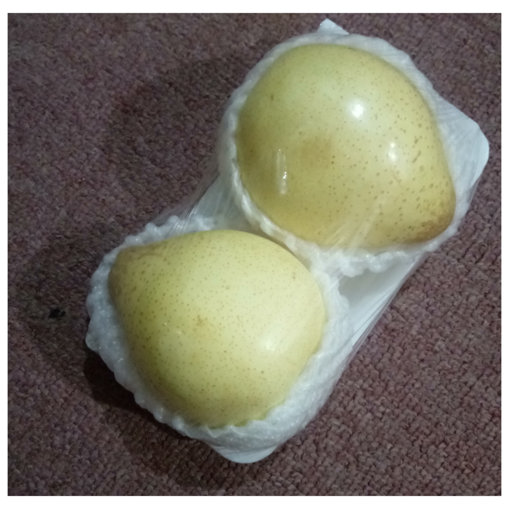

Gambar 2.14. Buah Pir (Sumber: Dokumen Pribadi)
Apabila seorang pedagang membeli sepeti buah pir dengan berat kotor 20 kg dan taranya 2 kg, hitunglah persentase taranya!
PENJELASAN
Diketahui:
-
Bruto sebuah peti buah pir adalah 20 kg
-
Tara sebuah peti buah pir adalah 2 kg
Ditanya:
Berapa persentase tara peti buah pir?
Jawab:
Persentase Tara = \[ \frac{Tara}{Bruto} × 100% \]
\[ \hspace{3.1cm}= \frac{2}{20} × 100% \]
\[ \hspace{3.1cm}=\]10%
Jadi, persentase tara dari peti buh pir adalah 10%